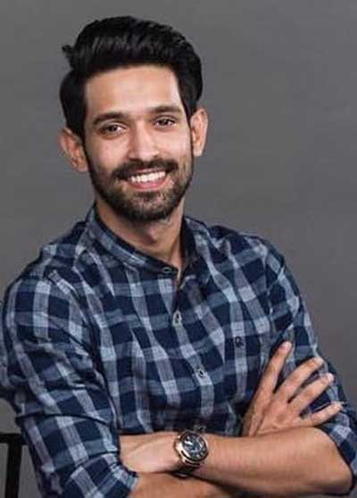
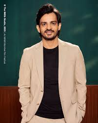

12वीं फेल 2023 की भारतीय हिंदी भाषा की जीवनी पर आधारित ड्रामा फिल्म है
विधु विनोद चोपड़ा द्वारा निर्मित, लिखित और निर्देशित। यह पर आधारित है
वास्तविक जीवन की कहानी के बारे में अनुराग पाठक की 2019 की अनाम गैर-काल्पनिक पुस्तक
मनोज कुमार शर्मा की, जो बेहद गरीबी को मात देकर भारतीय बने
पुलिस सेवा अधिकारी। फिल्म का शीर्षक विक्रांत मैसी है
भूमिका, मेधा शंकर, अनंत वी जोशी, अंशुमान पुष्कर और के साथ
प्रियांशु चटर्जी. 27 अक्टूबर 2023 को 12वीं फेल को नाटकीय रूप से रिलीज़ किया गया
आलोचनात्मक प्रशंसा प्राप्त की और ₹66 से अधिक की कमाई करते हुए एक स्लीपर हिट बनकर उभरी
₹20 करोड़ (US$2.5 मिलियन) के बजट पर दुनिया भर में करोड़ (US$8.3 मिलियन)।

विक्रांत
विक्रांत मैसी (जन्म 3 अप्रैल 1987) एक भारतीय अभिनेता हैं जो हिंदी में काम करते हैं
फ़िल्में और टेलीविज़न. आर. डी. नेशनल से अपनी शिक्षा पूरी करने के बाद
कॉलेज, मैसी ने अपने अभिनय की शुरुआत धूम मचाओ धूम (2007) से की।
और धरम वीर (2008), बालिका जैसे टेलीविजन धारावाहिकों में काम किया
वधू (2009-2010) और कुबूल है (2013)। मैसी ने फिल्मों में विस्तार किया
लुटेरा (2013), दिल धड़कने दो (2015) और हाफ में सहायक भूमिकाएँ
गर्लफ्रेंड (2017)।

मेधा शंकर
मेधा शंकर एक भारतीय अभिनेत्री हैं जो मुख्य रूप से हिंदी फिल्मों में काम करती हैं।
शंकर ने बीचम हाउस (2019) और उसके बाद अभिनय की शुरुआत की
शादीस्थान और दिल बेकरार (दोनों 2021) में सहायक भूमिकाएँ थीं। वह
12वीं फेल (2023) के साथ उन्हें सफलता मिली। शंकर पैदा करके लाए
उत्तर प्रदेश के नोएडा में. शंकर एक प्रशिक्षित हिंदुस्तानी शास्त्रीय संगीत हैं
गायक। उन्होंने फैशन मैनेजमेंट में मास्टर डिग्री पूरी |

अंशुमन
अंशुमान पुष्कर एक भारतीय अभिनेता हैं। वह खेलने के लिए सबसे ज्यादा जाने जाते हैं
हॉटस्टार मूल श्रृंखला ग्रहण (2021) में ऋषि रंजन की भूमिका और
नेटफ्लिक्स पर रॉकी के रूप में जामताड़ापुष्कर का जन्म 17 अगस्त 1993 को मोकामा में हुआ था।
बिहार के पटना जिले का एक छोटा सा शहर। वह स्वर्गीय के पुत्र हैं
वीरेंद्र प्रसाद सिंह। उनकी बहन जाह्वी राजन हैं। उन्होंने अपनी पढ़ाई पूरी की
एस.बी.एच. स्कूल, मोकामा से मैट्रिक और वाणिज्य से स्नातक की उपाधि प्राप्त |
संजय
पुष्कर का जन्म 17 अगस्त 1993 को पटना के एक छोटे से शहर मोकामा में हुआ था
बिहार का जिला. वह स्वर्गीय वीरेंद्र प्रसाद सिंह के पुत्र हैं. उसका
बहन जाह्वी राजन हैं. उन्होंने अपनी मैट्रिकुलेशन एस.बी.एच. से पूरी की।
स्कूल, मोकामा से और स्नातक वाणिज्य महाविद्यालय, पटना से किया। बाद
स्नातक स्तर की पढ़ाई के बाद उन्होंने राजीव गांधी इंस्टीट्यूट से एमबीए की डिग्री प्राप्त की
टेक्नोलॉजी, मुंबईसंजय का जन्म राजस्थान के जोधपुर जिले में हुआ था। वह
उन्होंने अपना हाई स्कूल सर्टिफिकेट होली स्पिरिट स्कूल, जोधपुर से प्राप्त किया।